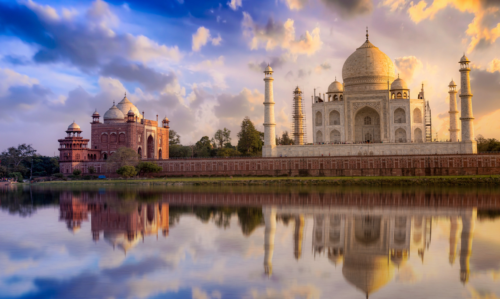
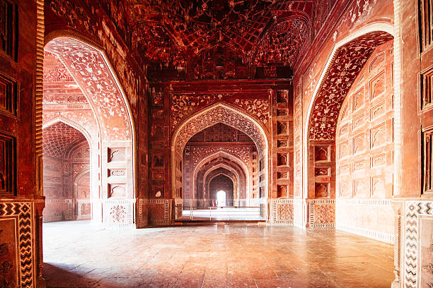

General Information
The Taj Mahal was commissioned by the Mughal emperor Shah Jahan in memory of his third wife, Mumtaz Mahal, who died during the birth of their 14th child in 1631. The mausoleum is made of white marble and is decorated with intricate carvings and inlaid with precious stones. The complex also includes a mosque, a guest house, and formal gardens. It is open to visitors year-round, with a small entry fee. 
History
The Taj Mahal was built over a period of 22 years, from 1632 to 1654. The construction was led by a team of more than 20,000 artisans and craftsmen, including architects, stonecutters, and calligraphers. The building's design is a blend of Indian, Persian, and Islamic architectural styles. 
Build
The Taj Mahal was built using white marble, which was brought in from Rajasthan, and inlaid with precious and semi-precious stones. The main dome is made of pure white marble, and is surrounded by four smaller domes. The complex also includes a mosque and a guest house, which were built using red sandstone. 